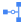
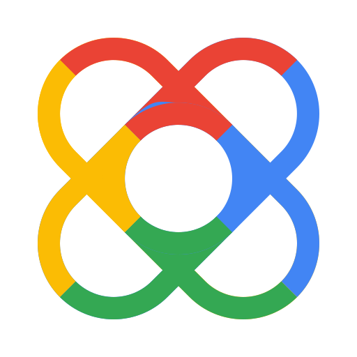
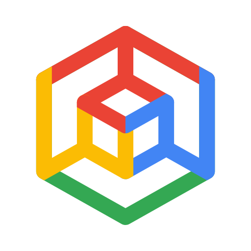

Arquitetura Preliminar Pre-Design Sprint - GCP + DHuO
Visão preliminar (pré–Design Sprint) do PE 1050/2026 com ícones Google Cloud: DHuO + Pub/Sub + Dataflow + Cloud Storage + BigQuery + Vertex + Looker. Será refinada após o Design Sprint.
Cloud
Stack 100% GCP · southamerica-east1 · DEV / HML / PROD isolados. Ícones: pack em assets/icons/gcp/.
Visão fim a fim
Origem · Conectividade
OT / APIs SANEPAR

Cloud VPNInterconnect

DHuOAPI ManagerIngestão
Pub/Sub
DataflowPath A

Kafka / GKEopcionalLakehouse
Consumo · Governança
Dataplex
IAM / IdP
Ícones: Google Cloud Icons · deck Official Icons & Solution Architectures · aliases em assets/icons/gcp/
Ingestão — Path A vs Path B
Path A · preferido
→
→
 GCS / BQ
GCS / BQ
Pub/Sub
Dataflow
Streaming I/O nativo Pub/Sub → Dataflow → Bronze/Silver/Gold.
Path B · fallback
→
GCS landing
→
Pub/Sub
Dataflow
Se Dataflow não puder ler direto do Pub/Sub: buffer em buckets, depois processa.
Decisão de desenho
Validar Path A no POC. Path B mantém o mesmo lakehouse. Kafka Confluent (GKE) só se fan-out exigir.
Módulos GCP
| Camada | Módulo | Papel |
|---|---|---|
| Integração | DHuO | API Gateway / Manager · ~150 APIs |
| Mensageria | Pub/Sub | Desacoplamento · tópicos telemetria |
| Stream | Dataflow | Path A ou leitura de GCS (Path B) |
| Landing | Bronze + buffer Path B | |
| Gold | Analytics · features ML | |
| Orquestração | Batch / ELT | |
| BI | 5 dashboards | |
| ML | 2 modelos · MLOps | |
| Gov / Ops | Dataplex · | LGPD · SLO |
Ofertas e evidências
- API Journey — DHuO
- Data Journey — lakehouse / ingestão
- AI Journey — Vertex · Looker
- Dossiê · diagramas pre-sales
- Stack: architecture-stack.yaml